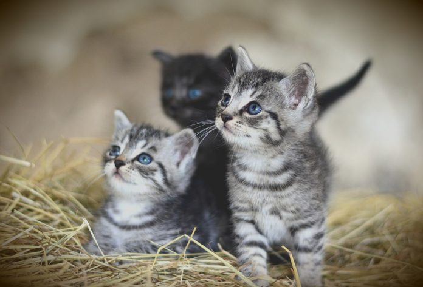

Back to the future is a project that takes users to a fascinating typographical trip in time. The project was aimed at the visualization of texts in the form of magazine articles by using typography styles at different historical periods, allowing users to navigate through accurately represented texts by switching themes on the timeline.
From the ancient civilisation of Sumerians , the time machine will take you to an incredible trip, passing through vintage appeal of Typewriting Machine, structured and geometric shapes with architectural echoes of Bauhaus, witnessing Popart that blurs the boundaries between "high" art and "low" culture, the golden era of arcade games and digitalisation of the future.
Furthermore, the project allows for the application of proposed cascading style sheets (CSS) to any user’s text with no HTML skills required due to the in-built editor that converts any raw text to that with general HTML structure. You can find out more by visiting “Try Yours”.
Back to the future works on Windows - Chrome, on Mac - Chrome, Safari and our mobile version runs on Android using Chrome.
Fasten your seatbelts and enjoy your trip!
We are three joyful students of the Master degree of "Digital Humanities and Digital Knowledge" at University of Bologna (Alma Mater Studiorum). You can reach the whole GitHub repository of the project at this link .

From left to right: Vittoria Moccia, Lisa Siurina and Chantal Lengua.
Vittoria is the curator of historical periods of XIX century (Typewriter) and First half of the XX century (Bauhaus). She has graduated in Cultural Heritage at the University of Ravenna.
Lisa is the curator of the birth of writing (Sumerian Cuneiform) and the Late XX century (Arcade). She has graduated in Linguistics at the National Research University of Electronic Technologies in Moscow, Russia.
Chantal is the curator of historical periods of 1960 (Pop Art) and 2025 (Future). She has graduated in Modern Literature (Humanities) at the University of Genova, Italy.
Università di Bologna
Via Zamboni 33
40126 Bologna, Italy